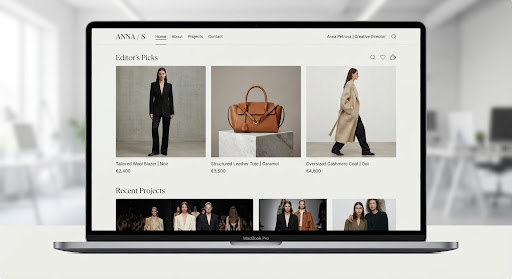

Data
Research
pandas
NumPy
PyTorch
생성형 AI
데이터 분석과 인공지능에 관심이 있는 연구자
홍길동
데이터 분석 · 머신러닝 · 생성형 AI
문제를 발견하고 해결책을 시각화하며 실현하는 여정
인터랙션 디자인과 컴퓨터공학을 복수 전공하여 디자인 의도와 기술적 구현 가능성 사이의 가교 역할을 수행합니다. 인간-컴퓨터 상호작용(HCI) 원리를 토대로 높은 수준의 사용성을 추구합니다.
Tech Corp
2022 - 현재Senior Product Designer & Design Lead
Studio Next
2020 - 2022UI/UX Designer & Frontend Developer
Creative Lab
2019 - 2020Junior Web Designer & Prototyper
데이터 분석, 머신러닝, 생성형 AI를 중심으로 연구합니다.
Tooling & Stack (예시)
데이터 분석과 인공지능을 탐구하는 프로젝트

새로운 기회, 협업, 프로젝트 문의는 언제든 편하게 연락해 주세요.